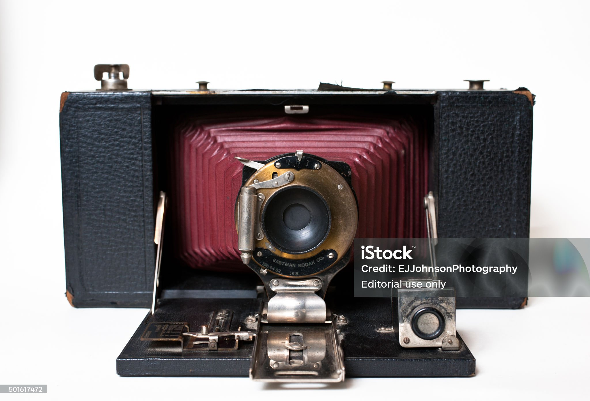

La communication
auteur brendan

Le kodak Nicéphore Niepce 1888
L'invention de la photographie. En 1824, Nicéphore Niépce place des pierres lithographiques recouvertes de bitume, au fond d'une chambre obscure et obtient, pour la première fois au monde, l'image fixée d'un paysage. Il faut un temps de pose extrêmement long de plusieurs jours en plein soleil.

Le minitel 1978
Le Minitel est créé par le ministère des Postes et Télécommunications et il est utilisé en France des années 1980 aux années 2000.

Le télégraphe électrique de Samuel Morse en 1837
Le télégraphe de Morse est l'un des tout premiers télégraphes électriques, réalisé par le peintre et inventeur américain Samuel Morse en 1837. Le télégraphe de Morse de 1837.

Le cinéma par Louis et Auguste Lumière en 1895
En 1895, Louis et Auguste Lumière ont donné naissance au grand écran grâce à leur ensemble caméra et projecteur révolutionnaire, baptisé le Cinématographe. Ce cliché d'Auguste (ci-dessus) et de Louis Lumière aurait été pris à la fin des années 1890 et colorisé par la suite